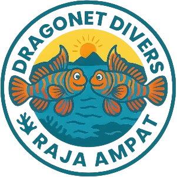
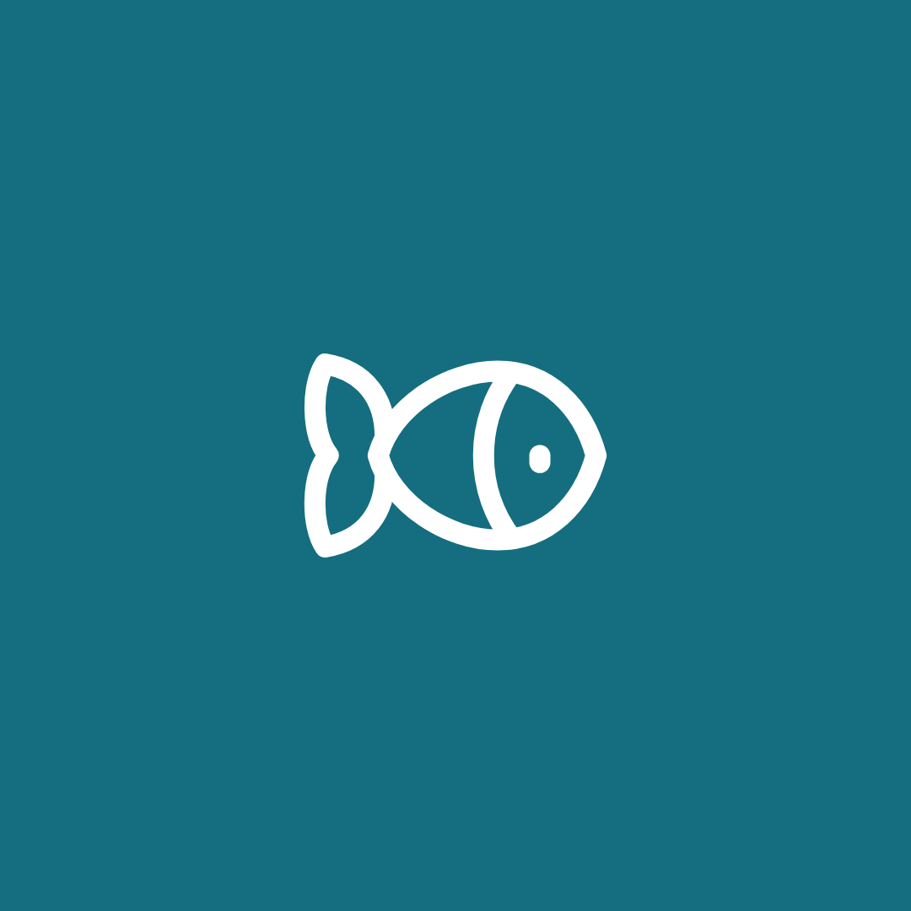
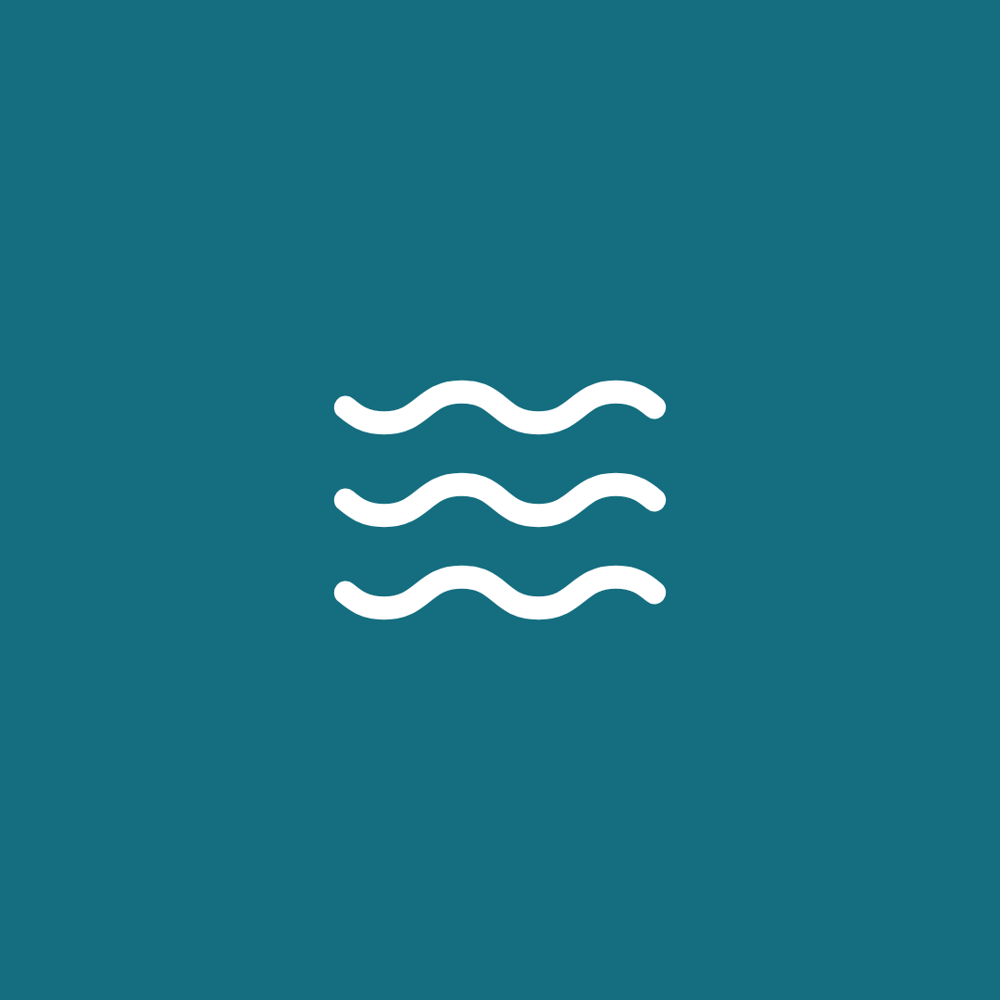
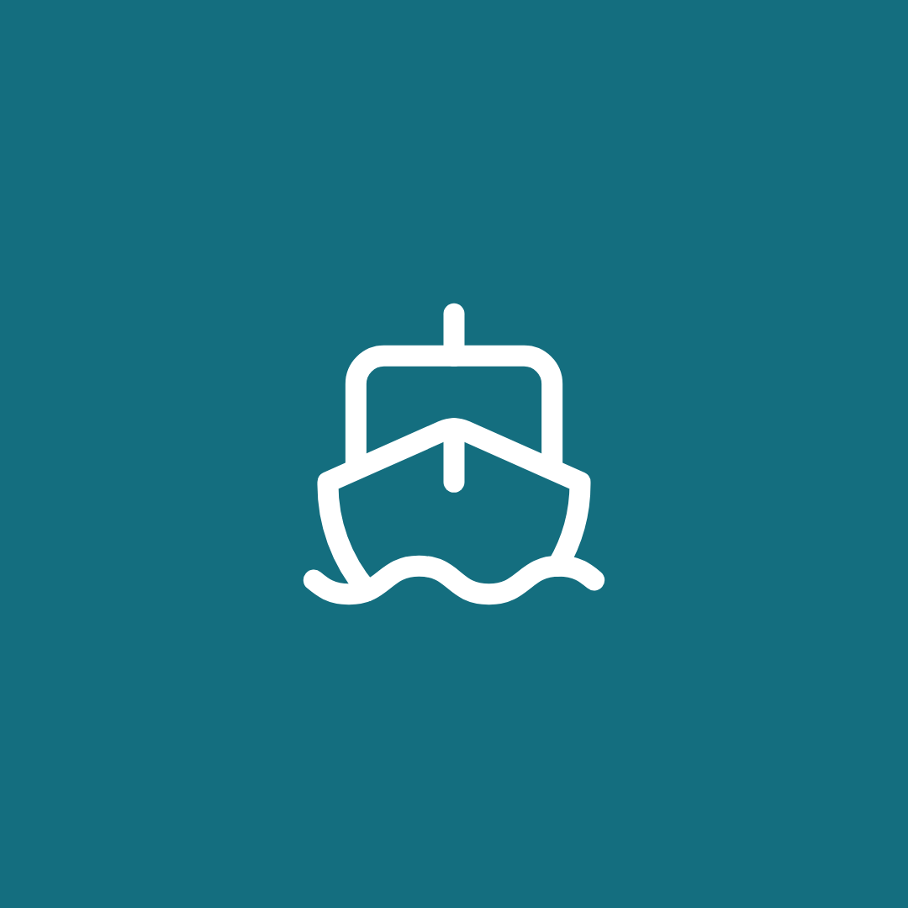
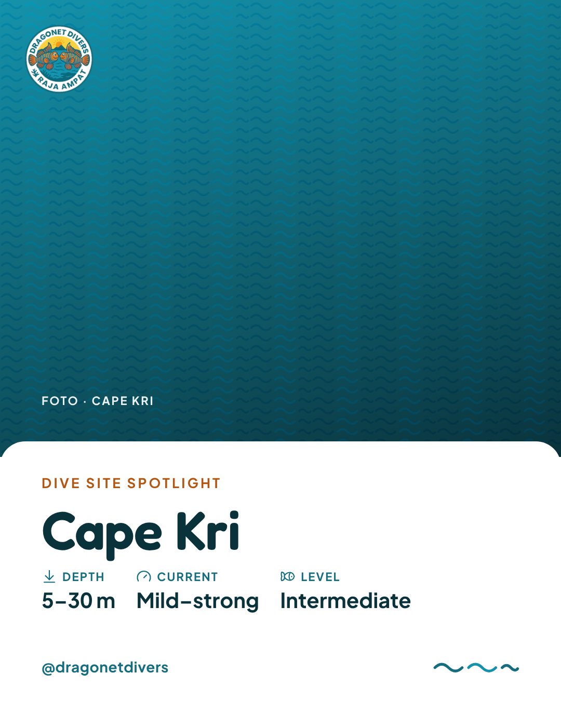
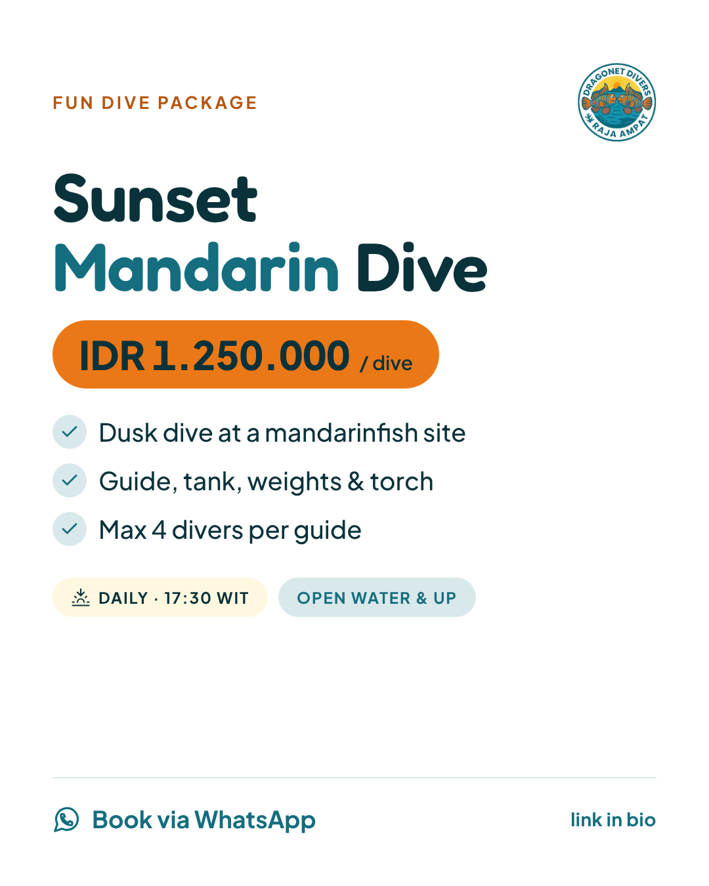
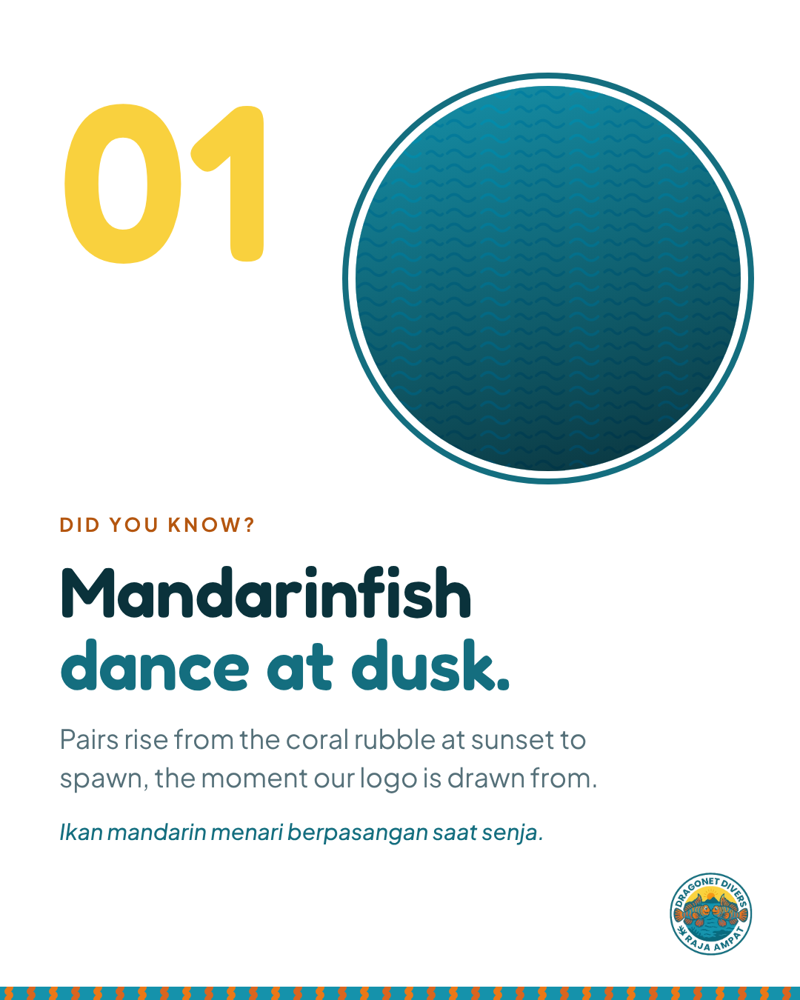
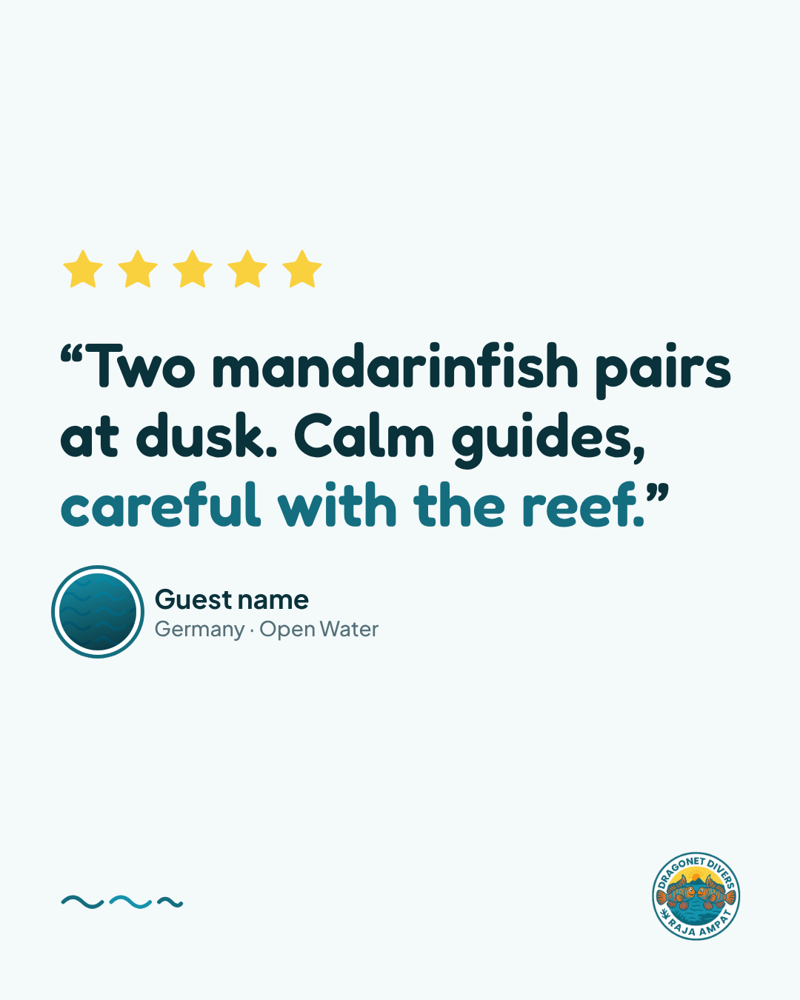
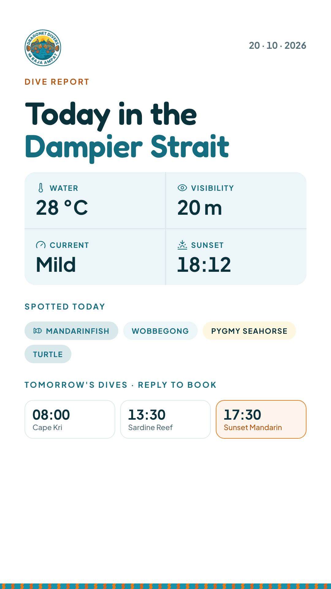
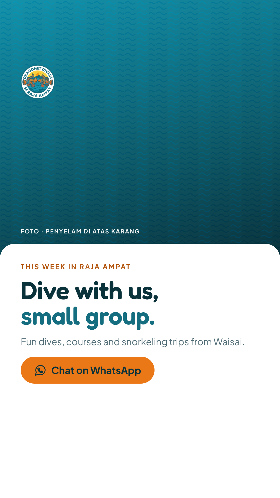

Pedoman identitas visual untuk website dan media sosialOktober 2026
Dragonet Divers · Brand identityIsi
Daftar isi
Isi pedoman
Fondasi
01Inti brand & tagline03
02Logo: anatomi & file04
03Logo: area aman, ukuran, latar05
04Logo: larangan06
05Warna utama07
06Warna turunan, netral & proporsi08
07Kontras & aturan warna09
08Tipografi: font10
09Tipografi: skala11
10Elemen grafis & ikon12
11Fotografi13
Penerapan
12Suara & bahasa14
13Website: tata letak & token15
14Website: header, hero, kondisi laut16
15Website: tombol, chip, judul section17
16Website: kartu18
17Website: form, info, tabel, footer19
18Media sosial: profil & ukuran20
19Media sosial: template feed21
20Media sosial: story & highlight22
21Media sosial: caption & hashtag23
22Aksesibilitas, file & kebutuhan24
Dragonet Divers · Brand identity01 Inti brand
01 · Inti brand
Grup kecil, pemandu lokal, laut penuh warna
Nama
Dragonet Divers Raja Ampat. Boleh disingkat Dragonet Divers. Jangan "DD" di materi publik.
Yang dijual
Fun dive, kursus selam, snorkeling, dan trip di Raja Ampat, terutama Selat Dampier.
Audiens
Penyelam internasional dan domestik, pasangan dan keluarga yang ingin snorkeling, pemula yang ingin kursus.
Janji brand
Grup kecil, pemandu lokal yang mengenal setiap karang, dan rasa takjub pada makhluk sekecil ikan mandarin.
Bahasa
Website: English (default) + Bahasa Indonesia. Media sosial: English dulu, satu baris Bahasa Indonesia.
Kepribadian
RamahSeperti dive guide yang sudah lama kenal.
TenangMeyakinkan soal keselamatan, tidak heboh.
TelitiSpesifik: nama site, kedalaman, biota.
Penuh warnaSeperti ikan mandarin, tapi dipakai hemat.
Hormat lautBiota bukan atraksi; karang tidak disentuh.
Tagline (usulan)
RekomendasiDive into colour.Menyelam ke dalam warna. Bio Instagram & hero website.
Small groups. Big colour. Raja Ampat.Menonjolkan grup kecil.
Where the reef dances at dusk.Khusus paket Sunset Mandarin Dive.
Dragonet Divers · Brand identity02 Logo
02 · Logo
Badge mandarin
Dragonet adalah keluarga ikan Callionymidae; anggotanya yang paling terkenal adalah ikan mandarin (Synchiropus splendidus). Saat senja, pasangan ikan mandarin naik dari celah karang untuk menari. Badge ini merekam momen itu: dua ikan berhadapan, matahari di atas pulau karst, dan laut Raja Ampat.
Cincin & tulisan → Teal Dragonet, warna utama#146E7F
Laut → Biru Laguna, warna pendukung#1592AB
Tubuh ikan mandarin → Oranye Mandarin, aksen CTA#EB7817
Langit → Kuning Fajar, sorotan kecil#F9D13E
Sirip ekor → Koral Sirip, ilustrasi & pola#D9651F
Bagian dalam badge → Putih, dasar website#FFFFFF
Tiga versi file
dragonet-divers-logo.pngAsli, transparan. Hanya di atas putih.
dragonet-divers-logo-plate.pngDalam cincin diisi putih. Untuk foto, Foam, footer gelap.

dragonet-divers-logo-white-bg.pngPersegi putih. Foto profil media sosial.
Pita bertulisan di file asli transparan. Di latar gelap atau foto, tulisan DRAGONET DIVERS / RAJA AMPAT hilang. Di luar latar putih, selalu pakai versi plate.
Dragonet Divers · Brand identity03 Logo
03 · Pemakaian logo
Area aman, ukuran, lockup, latar
Area aman = ¼ diameter badge
¼¼
Badge 64 px → ruang kosong minimal 16 px di semua sisi. Tidak ada teks, foto, atau tepi kartu di area ini.
Ukuran minimum
88 px56 px · layar min.faviconCetak: min. 20 mm. Di bawah ukuran ini pakai lockup atau favicon.
Website berdasar putih. Keempat warna ini aksen, masing-masing dengan satu peran.
UTAMATeal Dragonet
#146E7FRGB 20 110 127Dari cincin & tulisan logo.Tombol utama, link, ikon, judul aksen.Putih di atasnya 5.9 : 1
PENDUKUNGBiru Laguna
#1592ABRGB 21 146 171Dari air laut di logo.Ikon, ilustrasi, focus ring, kotak info.Teks hanya ≥ 24 px (3.7 : 1)
AKSENOranye Mandarin
#EB7817RGB 235 120 23Dari tubuh ikan mandarin.Tombol CTA (Book / WhatsApp), satu per layar.Teks Abyss di atasnya 4.7 : 1
SOROTANKuning Fajar
#F9D13ERGB 249 209 62Dari langit di logo.Bintang rating, stabilo, titik aktif.Bukan untuk teks
Dragonet Divers · Brand identity06 Warna
06 · Turunan, netral & proporsi
Putih memimpin, warna logo menyusul
Turunan untuk UI
Teal Gelap#0F5866Hover tombol teal
Teal Lembut#D9E8EBChip, tab aktif
Laguna Tipis#ECF6F8Kotak info
Mandarin Hover#F28A33Hover tombol CTA
Bara#B4560FTeks oranye (4.9 : 1)
Koral Sirip#D9651FIlustrasi & pola
Fajar Tipis#FEF8E0Peringatan, chip
Netral
Putih#FFFFFFDasar
Foam#F4F9FASection selang-seling
Mist#DCE8EBGaris, border
Garis Tegas#78939ABorder input
Slate#557079Teks sekunder
Abyss#0A323BTeks utama, footer
Kabut Malam#9DB9BFTeks sekunder footer
Proporsi dalam satu halaman
Putih + Foam ±80%
±12%
±5%
Abyss + Teal ±12% (teks, tombol utama, footer) · Biru Laguna ±5% (ikon, info) · Oranye + Kuning ±3% (satu CTA per layar, rating). Oranye kecil di layar, karena itu mata langsung menemukan tombol booking.
Dragonet Divers · Brand identity07 Warna
07 · Kontras & aturan
Kombinasi teks yang lulus WCAG AA
Batas: 4.5 : 1 untuk teks biasa, 3 : 1 untuk teks ≥ 24 px, ikon, border kontrol, dan focus ring.
AaAbyss / Putih · 13.7
AaPutih / Teal · 5.9
AaAbyss / Mandarin · 4.7
AaBara / Putih · 4.9
AaSlate / Putih · 5.3
AaAbyss / Kuning · 9.3
AaPutih / Abyss · 13.7
Aa✕ Putih / Mandarin · 2.9
Boleh
Teks utama Abyss di atas Putih atau Foam.
Tombol utama: latar Teal, teks Putih.
Tombol CTA: latar Oranye Mandarin, teks Abyss.
Teks oranye (eyebrow, harga): pakai Bara, bukan Oranye Mandarin.
Biru Laguna untuk ikon, ilustrasi, focus ring, dan judul ≥ 24 px.
Bayangan hanya untuk elemen mengambang (tombol WhatsApp, dropdown): 0 10px 30px rgba(10,50,59,.10). Kartu memakai border Mist, tanpa bayangan.
Struktur halaman (usulan)
HomeHero, kondisi laut, paket unggulan, dive site, testimoni, CTA
DivingFun dive, daftar dive site, Sunset Mandarin Dive
CoursesKursus selam per level
Snorkeling & TripsTrip harian, snorkeling keluarga
AboutCerita dragonet, tim, konservasi
Contact / BookForm booking ke WhatsApp, peta, kontak
Setiap halaman punya versi Bahasa Indonesia di /id.
Dragonet Divers · Brand identity14 Website
14 · Website: header, hero, kondisi laut
Layar pertama
Dragonet DiversRAJA AMPATENIDBook a dive
Raja Ampat · Dampier Strait
Dive into colour.
Small-group fun dives, courses and snorkeling trips with local guides who know every reef by name.
Book via WhatsAppSee packages
Water
28 °C
Visibility
15–25 m
Current
Mild
Sunset
18:12 WIT
Header putih 72 px, menempel saat scroll dengan garis bawah Mist; menu aktif Teal + garis ombak. Hero tidak setinggi layar penuh. Angka kondisi laut contoh; di website diisi dari data cuaca/laporan harian.
Dragonet Divers · Brand identity15 Website
15 · Website: tombol, chip, judul section
Satu tombol oranye per layar
DefaultHoverFokus keyboardNonaktifAksen
Book a dive
Book a dive
Book a dive
Book a dive
Utama
See packages
See packages
See packages
See packages
Garis
Our courses
Our courses
Our courses
Our courses
Teks
Read more
Read more
Pil, tinggi 48 px (kecil 40 px), padding 24 px, Plus Jakarta Sans 700 15 px. Fokus: cincin Biru Laguna 3 px berjarak 2 px. Tombol WhatsApp mengambang: lingkaran Teal 56 px
Chip level & jenis
BeginnerAdvancedSunset diveSnorkelMost popular
Pil 26 px, 11 px huruf besar, Plus Jakarta Sans 700. Warna mengikuti arti: Teal = umum, Bara = advanced, Kuning = senja, Laguna = snorkel.
Judul section
Dive sites
Reefs of the Dampier Strait
Eyebrow Bara → H2 Abyss → garis ombak → paragraf Slate maks. 60 karakter, rata kiri.
Dragonet Divers · Brand identity16 Website
16 · Website: kartu
Border tipis, tanpa bayangan
BeginnerSnorkel ok
Cape Kri
5–30 mMild–strongSchooling fish
View dive site
Fun dive
Most popular
Sunset Mandarin Dive
IDR 1.250.000 / dive
Dusk dive at a mandarinfish site
Guide, tank, weights, torch
Max 4 divers per guide
Ask on WhatsApp
“The guides found two mandarinfish pairs at dusk. Calm, patient, and so careful with the reef.”
Contoh tamu · Germany
Nama Pemandu
PADI Divemaster · Waisai
Dive site: foto 4:3, judul Fredoka 22 px, meta berikon, hover border Teal · Paket: border Mist, unggulan border 2 px Teal, harga Jakarta 800 · Testimoni: latar Foam, bintang Kuning · Tim: foto lingkaran bercincin Teal. Isi kartu contoh.
Dragonet Divers · Brand identity17 Website
17 · Website: form, info, tabel, footer
Booking berakhir di WhatsApp
Form bookingInput 48 px · radius 10
Enter at least 1 diver.
Send to WhatsApp
Dive conditions. Updated every morning from the boat before the first dive.
Strong current today. Cape Kri is for advanced divers only.
Package
Dives
Price (IDR)
Fun dive
1
1.000.000
Sunset Mandarin Dive
1
1.250.000
3-day dive package
6
5.400.000
Dragonet Divers · Brand identity18 Media sosial
18 · Media sosial: profil & ukuran
Grid yang tetap putih
dragonetdivers
Dragonet Divers Raja Ampat Dive into colour · Small-group diving & snorkeling in Raja Ampat · Dampier Strait · Book via WhatsApp ↓

Dive

Snorkel

TripsCoursesReviews




Handle Instagram @dragonetdiversrajaampat.
Format
Ukuran
Zona aman
Feed portrait (utama)
1080 × 1350
Margin 80 px; grid profil memotong ke 3:4, jauhkan teks dari 40 px tepi kiri-kanan
Selang-seling foto – putih – foto agar profil tetap terasa minimalis dan putih.
Foto bawah laut (F1, F2) diselingi template putih (F3, F4).
Maksimal dua posting dominan oranye berturut-turut.
Logo selalu versi plate di template; ukuran 110–130 px di kanvas 1080.
Dragonet Divers · Brand identity19 Media sosial
19 · Media sosial: template feed
Empat template feed 1080 × 1350
File siap ubah: brand/social/templates.html. Kotak bergaris biru adalah tempat foto asli; harga, site, dan kutipan masih contoh.
F1 · Dive Site SpotlightFoto penuh + kartu putih: nama site, kedalaman, arus, level.F2 · Marine Life FactLatar putih, foto biota dalam lingkaran badge, satu fakta, pita garis mandarin.F3 · Paket / PromoNama paket, harga di chip oranye, 3–4 poin, jadwal, CTA WhatsApp.F4 · TestimoniLatar Foam, bintang kuning, kutipan besar, nama & negara.
Dragonet Divers · Brand identity20 Media sosial
20 · Media sosial: story & highlight
Story 1080 × 1920 dan sampul highlight

S1 · Dive ReportSuhu, visibilitas, arus, biota hari ini, jadwal besok. Area merah = zona UI Instagram, kosongkan.

S2 · Booking CTAFoto + judul + tombol WhatsApp. Stiker link ditambahkan di aplikasi.
Highlight covers · lingkaran Teal, ikon garis putih
Emoji maksimal 2 per caption, bertema laut (ikan, matahari terbenam, masker selam).
Contoh caption · F2 Marine Life Fact
Two mandarinfish, one sunset, zero rush.
Every evening at our dusk site, mandarinfish pairs rise from the rubble to spawn. We wait at a distance, torches low, and let them dance. It's the moment our logo is drawn from.
Ikan mandarin menari berpasangan setiap senja. Kami menonton dari jarak aman.
Join the Sunset Mandarin Dive. Book via WhatsApp — link in bio.